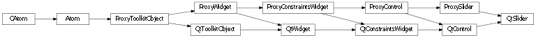
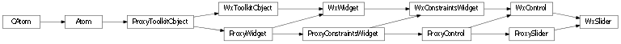

Bases: enaml.widgets.control.Control
A simple slider widget that can be used to select from a range of integral values.
A SliderTransform can be used to transform the integer range of the slider into another data space. For more details, see enaml.stdlib.slider_transform.
The minimum slider value. If the minimum value is changed such that it becomes greater than the current value or the maximum value, then those values will be adjusted. The default is 0.
The maximum slider value. If the maximum value is changed such that it becomes smaller than the current value or the minimum value, then those values will be adjusted. The default is 100.
The position value of the Slider. The value will be clipped to always fall between the minimum and maximum.
Defines the number of steps that the slider will move when the user presses the arrow keys. The default is 1. An upper limit may be imposed according the limits of the client widget.
Defines the number of steps that the slider will move when the user presses the page_up/page_down keys. The Default is 10. An upper limit may be imposed on this value according to the limits of the client widget.
A TickPosition enum value indicating how to display the tick marks. Note that the orientation takes precedence over the tick mark position and an incompatible tick position will be adapted according to the current orientation. The default tick position is ‘bottom’.
The interval to place between slider tick marks in units of value (as opposed to pixels). The minimum value is 0, which indicates that the choice is left up to the client.
The orientation of the slider. The default orientation is horizontal. When the orientation is flipped the tick positions (if set) also adapt to reflect the changes (e.g. the LEFT becomes TOP when the orientation becomes horizontal).
If True, the value is updated while sliding. Otherwise, it is only updated when the slider is released. Defaults to True.
Whether or not to automatically adjust the ‘hug_width’ and ‘hug_height’ values based on the value of ‘orientation’.
A reference to the ProxySlider object.

Bases: enaml.qt.qt_control.QtControl, enaml.widgets.slider.ProxySlider
A Qt implementation of an Enaml ProxySlider.
A reference to the widget created by the proxy.

Bases: enaml.wx.wx_control.WxControl, enaml.widgets.slider.ProxySlider
A Wx implementation of an Enaml ProxySlider.
A reference to the widget created by the proxy.